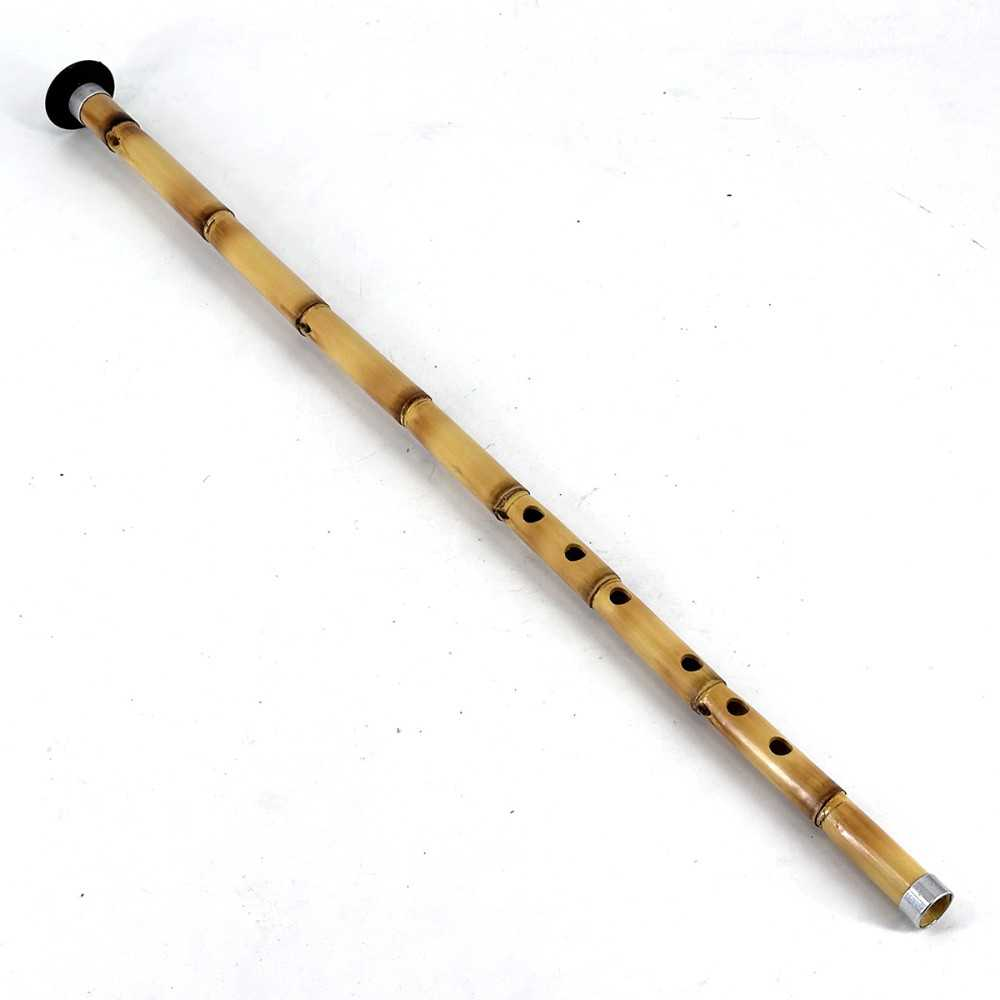
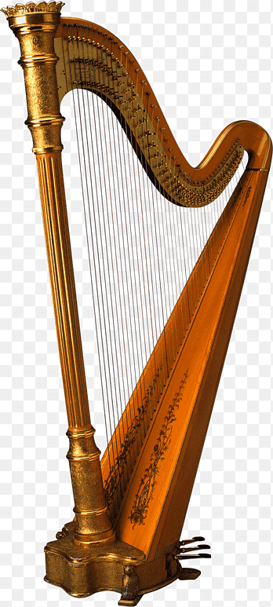

Egyptian ney
The ney (/neɪ/ NAY; Persian: نی) is an end-blown flute that figures prominently in traditional Persian, Turkish, Jewish, Arab, and Egyptian music. In some of these musical traditions, it is the only wind instrument used. The ney has been played for over 4,500 years, dating back to ancient Egypt, making it one of the oldest musical instruments still in use.

golden harp
The term "golden harp" carries rich symbolic, mythological, and cultural significance across various contexts, often representing musical excellence, divine connection, or a key element in folklore. In Greek mythology, a golden harp (or lyre) was gifted to Orpheus by the god Apollo, the music of which could charm everything from animals to gods and even the elements of the underworld. This highlights the instrument as an emblem of creativity and artistic expression.
